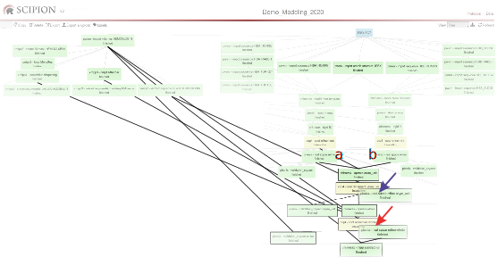
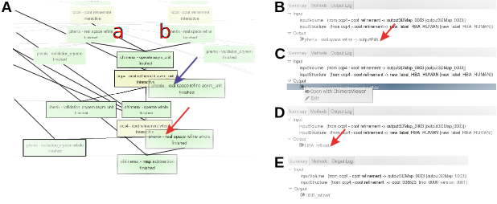

13. Building the asymmetric unit¶
Once we have selected the models for metHgb \alpha
and \beta subunits (see the workflow branches to have
\alpha and \beta subunits; Fig. 13.1), we can regenerate the
smallest asymmetrical element of the starting map. With this aim we
are going to use protocols to operate with atomic structures (chimerax-operate or atomstructutils-operator), to refine them both manually (ccp4-coot refinement) and automatically (phenix-real space refine) and to validate them (phenix-validation_cryoem and phenix-emringer). A brief schema of the main steps of this part of the workflow can be seen in Fig. 13.1. Take into account that in real live probably
many more steps of refinement and validation will be required.

{kind=link}
Fig. 13.1 Scipion framework detailing the workflow to reconstruct the structure of the map asymmetric unit (blue arrow) and the whole atomic structure (red arrow).¶
- Protocol to join the metHgb \alpha and \beta subunits in a unique atomic structure:Two protocols can be used for this purpose (chimerax-operate or atomstructutils-operator) and the result should be identical.Before starting, nevertheless, be sure that you have two atomic structures and each one includes an only chain with a different id. Remember that chain ids may be changed for other chain ids in ChimeraX and Coot.Secondly, it could be very convenient to change the Scipion output label of each subunit, in order to follow them easily in Scipion. According to Fig. 13.2 go to the Summary of the two final protocols that allow to generate those atomic structures and press the black arrow (C) to select the option Edit. Type the new output name of the structures (HBA_refined (D) and HBB_refined (E), respectively).
Fig. 13.2 A. Zoom in on Fig. 13.1. B. Summary of the protocol box from PHENIX real space refine (\alpha in (A)). Red arrow points at the Scipion output name. C. Menu opened pressing the output black arrow of the Summary. D. New name of the Scipion output in the Summary. E. Summary from the protocol box PHENIX real space refine (\beta) after applying the same edition process.¶
Then, open again ChimeraX operate protocol and following the already indicated instructions, include the models of metHgb \alpha and \beta subunits in params Atomic structure and Other atomic structures, respectively (Fig. 13.3 (A)). Firstly, check that both models are perfectly fitted in the map asymmetric unit. Otherwise, apply the command fit inMap, as it was previously shown. Next, create a single atomic structure by joining models #3 and #4 in ChimeraX Models panel. To generate a combined model write in the command line:scipioncombine #3,4
The new model #5 is shown in ChimeraX Models panel (Fig. 13.3). Finally, save this fitted structure writing in ChimeraX command line:scipionwrite #5 prefix asymmetric_unit_model_
- Protocols to refine the new combined structure generated:At this point refinements could cover specially the overlapping area between the two chains. Help yourself with the Coot tools of Validate in the main menu, as well as the visualization tools of PHENIX real space refine protocol.
- Validation protocols to select the best model of the human metHgb unit cell:Validate the new combined structure generated is recommendable before continuing with the next steps in the workflow. EMRinger and Validation CryoEM (MolProbity) validation statistics should be computed for the new model of human metHgb asymmetric unit, generated by combining metHgb \alpha and \beta subunits. Appendix Solutions (Question11) contains a statistics table for the unit cell model (Table 8). We can try to improve those statistics by additional refinement processes. By performing refinement in real space with PHENIX some of the statistics could result improved. Table 8 contains also RMSD values computed in a similar way as we have seen for \alpha and \beta subunits, considering as fixed structure chains A and B from 5NI1 atomic structure. To continue with the modeling process we can select the unit cell model generated by PHENIX real space refine because most of its validation statistics show the best values (CC(mask), EMRinger score and MolProbity values). Exceptionally, RMSD regarding the published structure yields the worst value.
{kind=link}
{kind=link}